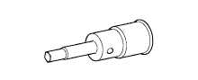

ТОПЛИВНАЯ СИСТЕМА (для моделей без DPF) > ПРОВЕРКА БЕЗ СНЯТИЯ С АВТОМОБИЛЯ > Подготовка

| Фирменный герметик Seal Packing Black от компании Тойота, Three bond 1207B или аналогичный. | - |
| Контейнер | - |
| Индикатор часового типа | - |
| Шланг | - |
| Магнитная стойка | - |
| Круглогубцы | - |
| Динамометрический ключ | - |
| Штангенциркуль | - |
 | 09010-3C110 | Комплект торцевых шестигранных головок | - |
 | (09013-6C100) | Торцевой шестигранный ключ 5 мм | - |
|  | (09013-6C110) | Торцевой шестигранный ключ 6 мм | - |
 | 09017-1C130 | Разрезная головка 17 мм | - |
 | 09082-00040 | Электрический диагностический прибор TOYOTA | - |
 | (09083-00150) | Комплект проводов для диагностического прибора | - |